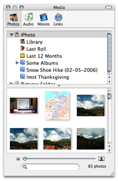

iLife Integration
iLife Integration

The iLife Media Browser
The iMedia browser puts your iPhoto pictures and any images in your pictures folder at your fingertips. It reads your iTunes music, Garage Band tracks and iMovie sound effects, giving you direct access to the audio that is most important to you. It looks at anything in your Movies folder and previews the clips. It lists your Safari bookmarks. And it does it all with drag and drop support. Amazing.
Add any of the images, movies, tunes or bookmarks to an entry by dragging them from the media browser into your entry's text. Journler links to the media from within the entry so that you can quickly access it later on.
Or even right now. Click on the media's link and Journler will load it into a built-in viewer, where you can see the image, play the song or watch the movie. When you click on a bookmark Journler goes online and accesses the site. Do it all without ever leaving your journal.
Want to know more? Read about Journler's resource management to find out how Journler handles file links, or check out the native support for over half a dozen of the most popular media formats.